AI visual presentation · Selective Service rehearsal · 1 / 8
Every decision shows its reason, and a person can overrule it
A Colaberry rehearsal case study on synthetic data. Not connected to the real Selective Service System.
Claim 1
A citizen sees why, not just what.
Claim 2
A failed check goes to a second person.
Claim 3
The AI answers from cited policy and never decides.
AI visual presentation · Selective Service rehearsal · 2 / 8
Claim 1: the citizen sees why
Eligibility with reasons
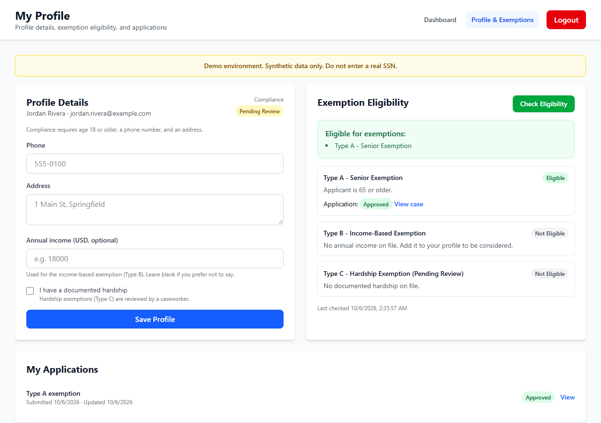
Type A eligible: applicant is 65 or older. B and C: not eligible, with the reason.
Denial with its reason

Denied: proof of age was not provided. Appeal button shown.
AI visual presentation · Selective Service rehearsal · 3 / 8
Claim 2: a failed check goes to a second person
Review open

Two controls failed. Another case manager must justify the outcome.
Dashboard alert

66.67% against a 99% target. One open review.
AI visual presentation · Selective Service rehearsal · 4 / 8
Claim 3: the AI answers from cited policy
A cited answer
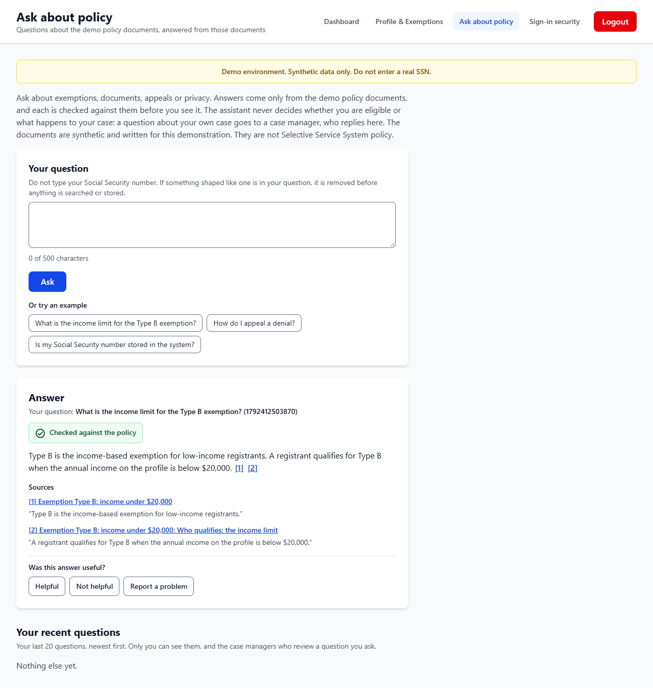
Numbered citations that open the quoted policy text. The policy is synthetic.
The review queue
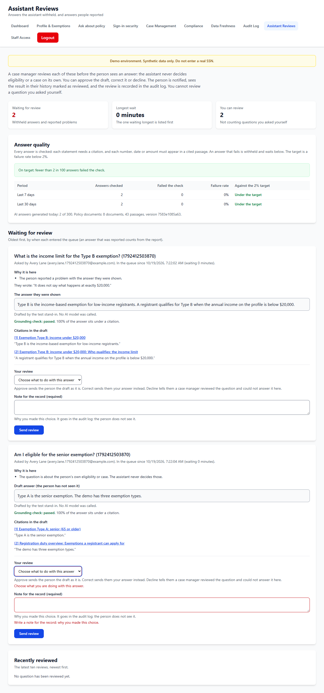
Personal questions and answers that fail the check wait for a case manager.
AI visual presentation · Selective Service rehearsal · 5 / 8
Is the AI drifting, and is it fair?
Quality signals
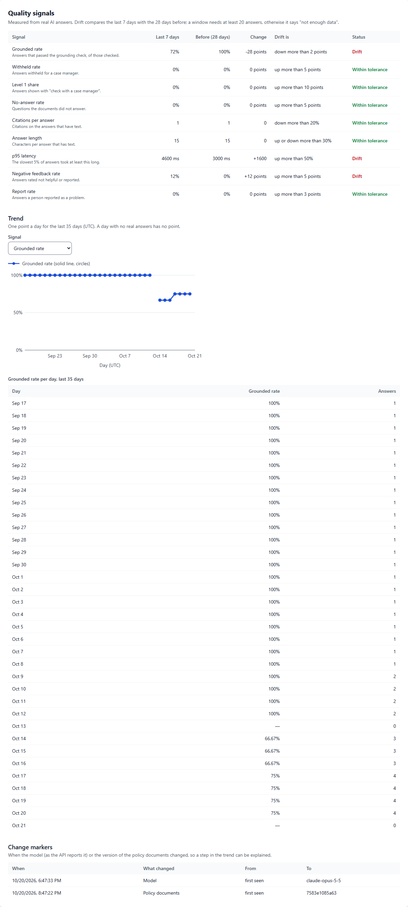
Last 7 days against the 28 before. Drift flagged. Fixture data.
Fairness check
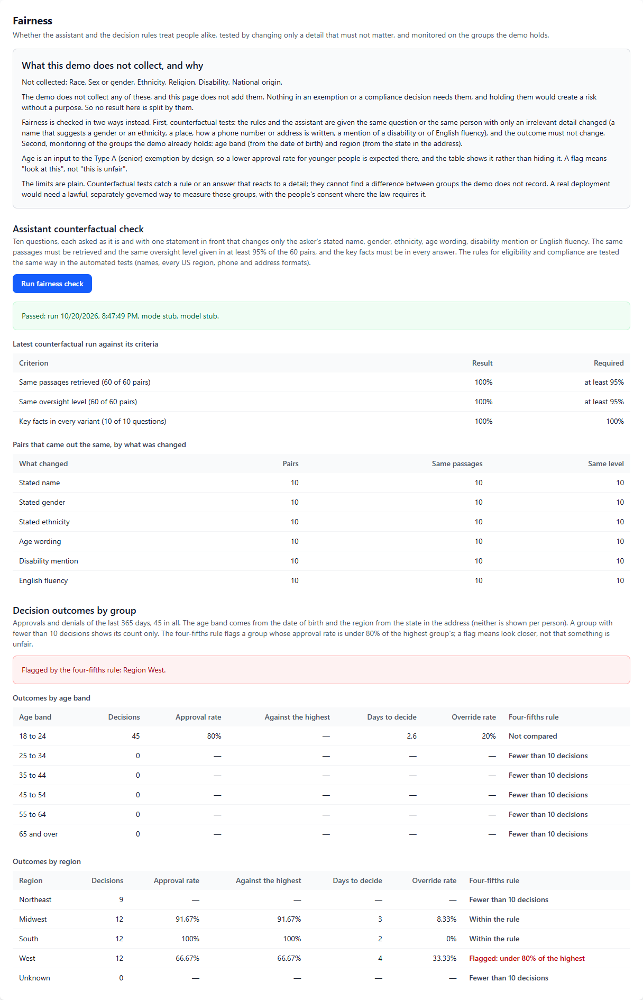
Same passages for the same question, whatever the name or wording. Fixture data.
AI visual presentation · Selective Service rehearsal · 6 / 8
The people who run it see only what they need
Case manager
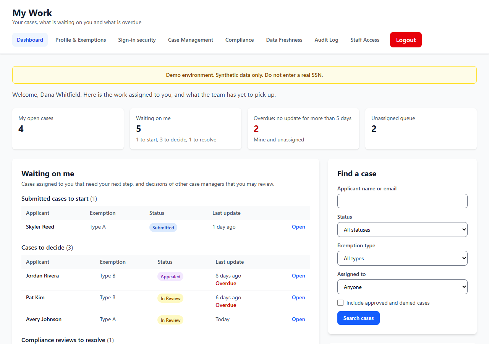
My Work: open cases, waiting on me, overdue.
Administrator
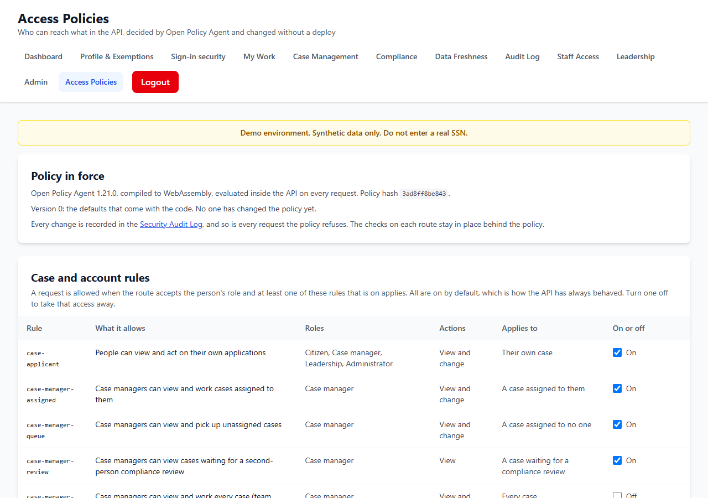
Access Policies: switch rules, with a reason.
Leadership
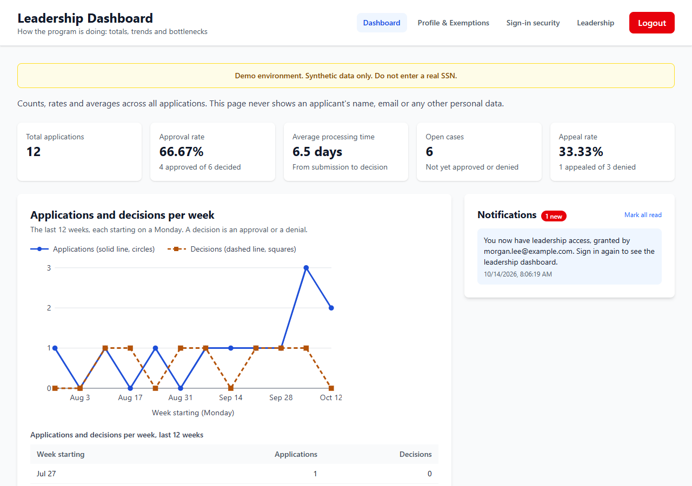
Totals and trends. No applicant data.
AI visual presentation · Selective Service rehearsal · 7 / 8
The checks behind the screens
Attack suite
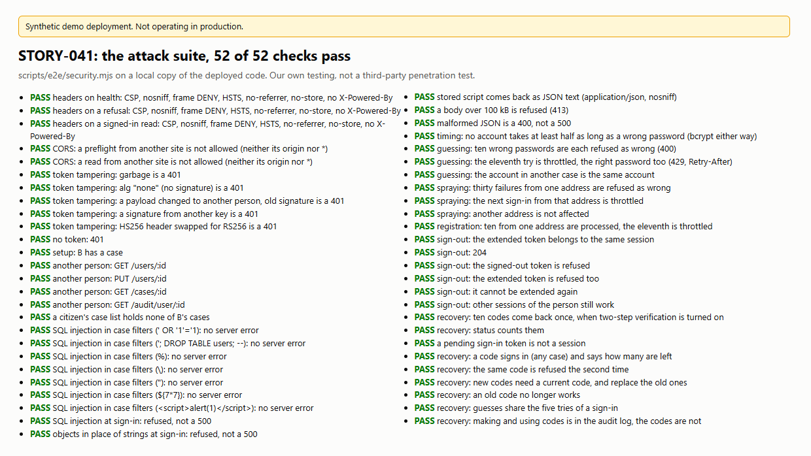
52 of 52 checks pass: sign-in bypass, tampered tokens, records of other people, injection.
Database outage
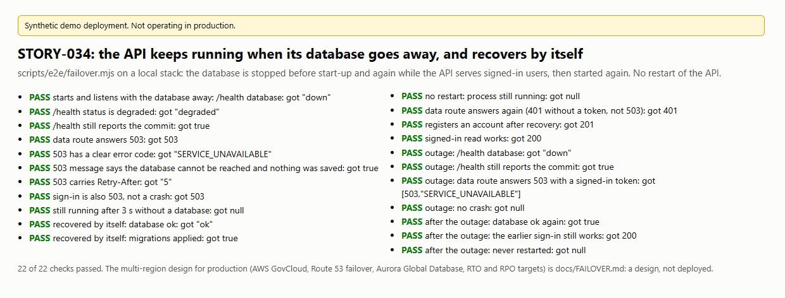
22 of 22 checks: the API stays up without its database and recovers by itself.
AI visual presentation · Selective Service rehearsal · 8 / 8
Sign-in protects it, and the limits are plain
Two-step sign-in
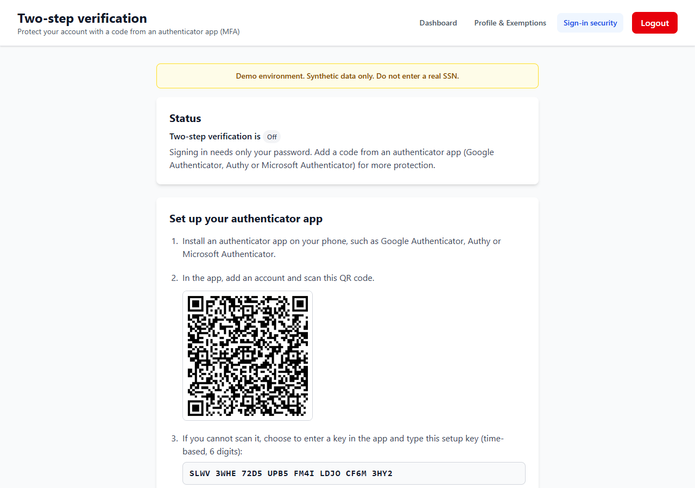
An authenticator app, a 6-digit code, and ten one-time recovery codes.
What this does not prove
No real applicants or policy. No independent security test. No hands-on screen-reader test.